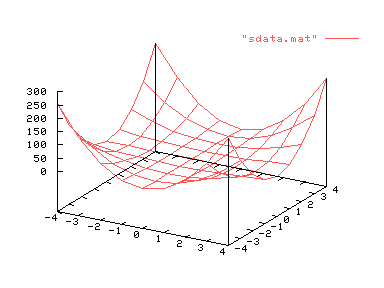
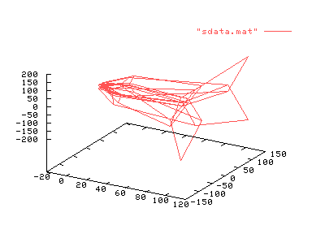

| Herramientas en GNU/Linux para estudiantes universitarios: | ||
|---|---|---|
| Anterior | Capítulo 7. Representaciones de datos | Siguiente |
gnuplot permite realizar gráficos tridimensionales de datos. El fichero de entrada ha de tener tres columnas, una por cada coordenada X, Y, Z. Por ejemplo, supongamos que tenemos el siguiente fichero de datos:
# Created by Octave 2.0.16, Mon Jul 15 16:01:06 2002 # name: aa # type: matrix # rows: 81 # columns: 3 -4 -4 256 -3 -4 144 -2 -4 64 -1 -4 16 0 -4 0 1 -4 16 2 -4 64 3 -4 144 4 -4 256 -4 -3 144 -3 -3 81 -2 -3 36 -1 -3 9 0 -3 0 1 -3 9 2 -3 36 3 -3 81 4 -3 144 -4 -2 64 -3 -2 36 -2 -2 16 -1 -2 4 0 -2 0 1 -2 4 2 -2 16 3 -2 36 4 -2 64 -4 -1 16 -3 -1 9 -2 -1 4 -1 -1 1 0 -1 0 1 -1 1 2 -1 4 3 -1 9 4 -1 16 -4 0 0 -3 0 0 -2 0 0 -1 0 0 0 0 0 1 0 0 2 0 0 3 0 0 4 0 0 -4 1 16 -3 1 9 -2 1 4 -1 1 1 0 1 0 1 1 1 2 1 4 3 1 9 4 1 16 -4 2 64 -3 2 36 -2 2 16 -1 2 4 0 2 0 1 2 4 2 2 16 3 2 36 4 2 64 -4 3 144 -3 3 81 -2 3 36 -1 3 9 0 3 0 1 3 9 2 3 36 3 3 81 4 3 144 -4 4 256 -3 4 144 -2 4 64 -1 4 16 0 4 0 1 4 16 2 4 64 3 4 144 4 4 256 |
Las dos primeras columnas del fichero son los valores de X e Y donde se ha evaluado la tercera columna, que corresponde a la función f(x,y)=(x**2)*(y**2). Puede observarse que cada vez que la variable Y cambia de valor se deja una línea en blanco en el fichero de datos. Esto indica a gnuplot que no una los puntos que están arriba y debajo de la línea en blanco. De esta forma se evita que aparezcan líneas que emborronarían la gráfica. Veamos la gráfica resultante:
set data style lines
splot "sdata.mat"

También se podría realizar una representación paramétrica, e incluso en coordenadas cilíndricas o esféricas (otra cuestión es que el dibujo tenga sentido).
set data style lines
set mapping spherical
splot "sdata.mat"

Para más información ver "help plot datafile".